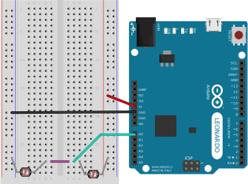

Step 1 - Setting Up The Sensor
First things first, we need to build the circuit for our gesture sensor.
This section will show you the circuit diagram for you to copy, and also
explain how it works.
About The Components
We will be using just two different components to build our gesture sensor!
The first is the Arduino, obviously. The second is called a Light
Dependent Resistor or LDR. It's the one that looks like a little
circle with legs in the picture below.

You've probably guessed, that it is a resistor, and that it's resistance
changes depending on how much light we shine on it's face. We can build a
circuit that uses two of these, and detects that one of them has been
covered up.
Building the circuit.
The diagram below shows how to connect two LDRs to the Arduino. Believe it
or not, this is all the circuitry we need to make our sensor! Copy it
carefully using your components, and then move on to the next section.
Can you guess how the circuit is going to work? Remember, the A0
pin we have connected to the Arduino is an input, and the LDRs change
depending on how much light they can see.

Testing It Out.
Now, lets write some code, and work out how our circuit behaves when we
wave at it. See if you can work out what each line of the code does, and
how your code relates to the circuit you just made.

{% highlight C linenos %}
{% include_relative gesture/gesture.ino %}
{% endhighlight %}

Upload this code to the Arduino, like you did in the
getting started section.
Once that has finished, you can use a tool called the Serial Plotter
by going to Tools -> Serial Plotter in the Arduino IDE Menu Bar.
All this does is make a graph of the sensor value we are sending back to the
computer with the Serial.println command. You should see something
like what appears in the GIF below:

How it works.
Figured it out yet? Don't worry if not. Here's how:
This circuit is called a voltage divider. It is a way of taking a
big voltage, and making it smaller. It can also be used to do simple maths,
make a signal more manageable, and, in our case, detect swipes!
It works by dividing the voltage across the two LDRs. Remember, we
start with 5V at the top of one LDR, and finish with 0V at the bottom of
the other one. Somewhere, we need to loose or "drop" 5V. If the two LDRs have
the same resistance then each one will drop half of the voltage, or
2.5V. Now, if the top LDR has a much bigger resistance than the bottom one,
then more volts are dropped by it than the bottom one. This means
that the sensor value will be smaller, because by the time we get to the
second LDR, there are fewer volts left!
Try thinking of it the other way round, if the top LDR has a very small
resistance, and the bottom one a very big one, what do you think the sensor
value will be? Big or Small?
Big of course! Because all the volts are "dropped" across the bottom LDR.
Now remember that we can change the resistance of the LDR by changing how much
light they can see? This is how our gesture sensor will work. By changing the
light on one sensor, we affect the voltage between the LDRs, and can measure
it with the Arduino!
Don't worry if all of that was confusing (looking at you too parents!),
hopefully it will become clear as you carry on. Next up, let's write a little
more code so we can easily tell if we are swiping left or right.
< Previous |
Next >